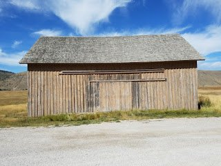

When we were at our RV lot in Casa Grande AZ last winter, we took the time to attend our Escapees RV Club annual rally (Escapade) that was being held at Pima County Fairgrounds at Tucson, AZ.


This was the 59th annual Escapade and was, as usual, full of educational seminars, live entertainment, food, impromptu happy hours and a large vendor fair selling all things RV related. You can check out the 60th Escapade information to be held in July 2020 at Rock Springs Wyoming by following this link.

One of the seminars that Kathy and I attended was put on by Liz Rice of Historicorps. Historicorps is a 10 year old organization that works with (typically) government agencies to restore and preserve historic buildings on federal or state lands like; national forests, state parks, and more. They solicit volunteers to do the work and some of those volunteers, like us, are RV’ers. Here’s a link to their completed projects over the last few years. As of this writing, there is only one project scheduled for 2020 (in Puerto Rico) but I know there will be many more published as we work through the winter into spring.
Kathy and I decided that there was one of their projects that would fit right into our travel schedule in late summer/fall 2019. We realized that after D.C. Booth in Spearfish SD we would then be visiting Yellowstone National Park and Grand Teton National Park along with some other spots of interest on our way back to Arizona for the winter.
The project we decided to volunteer for was the rehab of the historic Miller Barn on the National Elk Refuge in Jackson (Hole) Wyoming. (just south of Yellowstone). The project work would be mostly painting, with some replacement of wood siding and restoration of window sills and frames.


Kathy, feeling a little hesitant about working with hand tools, decided that she would be happy to work in the mess tent and kitchen, but ultimately she got involved in some painting too!


If you know me at all, then you know I’m not comfortable with heights over about 6-8 feet yet there was at least one time that I got up into the bucket for a few hours to paint the gable end of the barn.

There were 10 volunteers – two couples and the other volunteers were single folks. 3 or 4 of the crew had worked with Historicorps on other projects in the past while 5 or 6 of us were new to working with this organization. The two couples lived in their RV’s and the Elk Refuge provided us with full hook-up sites. The others slept in tents or in their cars.

We had two crew leaders … Ruthie and Daniel. Ruthie was the Chief and has worked with Historicorps many times over the years while Daniel was new to the organization. Daniel, in addition to being the new guy on the block running a crew (and the youngest in our group) was responsible for helping to give training and direction to the volunteers and he was also responsible for planning our meals, buying all the food, and cooking our meals.


In addition to providing us with an opportunity to serve as volunteers, we were also provided with all the tools necessary to do the job, training, 3 meals a day, a full hook-up RV site …. and best of all … outstanding beauty in all directions!


We’ve been volunteering for about 3 years now since we sold our sticks ‘n bricks and hit the road full time. All of our experiences have been rewarding and this was another great example of the wonderfully rewarding experiences.
This experience was especially fun because we were working (and relaxing) with other like-minded people from all walks of life but with the same interest in volunteering and seeing a project to completion. Different personalities of different ages, different walks of life, different work experiences but we all enjoyed each other’s company and respected each other’s contribution to the project.
By the way, what I haven’t already explained is that this was actually a 4 week project. Historicorps solicits volunteers for one-week stints, but they will allow you to stay longer. This means that the crew chiefs have to train a new crew every week. But it works for them as they can get more volunteers this way, not just counting on retired folks but getting those who are still working a regular job the opportunity to take a “volunteer” vacation that is very rewarding.


Thanks for riding along and stay tuned for more updates on our travel and volunteering experiences.
If you’re not already subscribed to this blog, you can easily do so by scrolling up to the top of any page and entering your email address in the block on the right side.
You can also subscribe to our YouTube channel (herbnkathyrv) on You Tube.
If you’re curious (at any time) to know where we are at that moment then click the button at the top right of this page labeled “See Where We Are Now“.
We’d love to hear from you. If you scroll all the way down to the bottom of this page, you can send us a note. Again, thanks for riding along. ’til next time – safe travels.